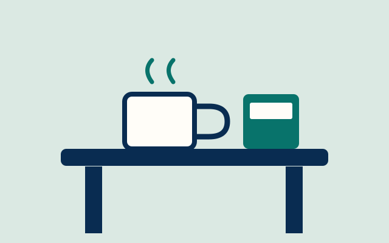
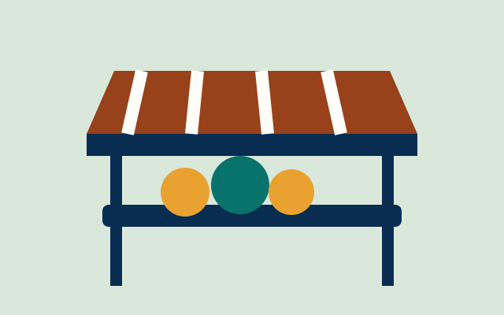

Cafés
Review daily sales, drawer cash, payment fees, and upcoming bills.
Made for small businesses
IC is being imagined for people who run the business, serve the customers, and still have to figure out the numbers at the end of the day.

Review daily sales, drawer cash, payment fees, and upcoming bills.
Keep an eye on sales, expenses, and inventory spending.

Organize cash, supplies, and sales from one event to the next.
| Business | Track | Proposed benefit |
|---|---|---|
| Café | Sales, bills, drawer cash | Make daily closing clearer |
| Retail shop | Sales, expenses, inventory | Notice upcoming costs |
| Market vendor | Event sales, cash, supplies | Review each sales day |
These outside resources offer general guidance on planning and managing a business: